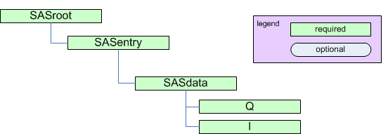

3.3.2.3. NXcanSAS¶
Status:
application definition, extends NXobject
Description:
Implementation of the canSAS standard to store reduced small-angle scattering data of any dimension.
For more details, see:
The minimum requirements for reduced small-angle scattering data as described by canSAS are summarized in the following figure:
The minimum requirements for reduced small-angle scattering data. (
full image) See below for the minimum required information for a NeXus data file written to the NXcanSAS specification.¶Implementation of canSAS standard in NeXus
This application definition is an implementation of the canSAS standard for storing both one-dimensional and multi-dimensional reduced small-angle scattering data.
NXcanSAS is for reduced SAS data and metadata to be stored together in one file.
Reduced SAS data consists of \(I(\vec{Q})\) or \(I(|\vec{Q}|)\)
External file links are not to be used for the reduced data.
A good practice/practise is, at least, to include a reference to how the data was acquired and processed. Yet this is not a requirement.
There is no need for NXcanSAS to refer to any raw data.
The canSAS data format has a structure similar to NeXus, not identical. To allow canSAS data to be expressed in NeXus, yet identifiable by the canSAS standard, an additional group attribute
canSAS_classwas introduced. Here is the mapping of some common groups.
group (*)
NX_class
canSAS_class
sasentry
NXentry
SASentry
sasdata
NXdata
SASdata
sasdetector
NXdetector
SASdetector
sasinstrument
NXinstrument
SASinstrument
sasnote
NXnote
SASnote
sasprocess
NXprocess
SASprocess
sasprocessnote
NXcollection
SASprocessnote
sastransmission
NXdata
SAStransmission_spectrum
sassample
NXsample
SASsample
sassource
NXsource
SASsource
(*) The name of each group is a suggestion, not a fixed requirement and is chosen as fits each data file. See the section on defining NXDL group and field names.
Refer to the NeXus Coordinate System drawing (The NeXus Coordinate System) for choice and direction of \(x\), \(y\), and \(z\) axes.
The minimum required information for a NeXus data file written to the NXcanSAS specification.
NXcanSAS HDF5 data file entry : NXentry @NX_class = "NXentry" @canSAS_class = "SASentry" @version = "1.0" definition = "NXcanSAS" run = "<see the documentation>" title = "something descriptive yet short" data : NXdata @NX_class = "NXdata" @canSAS_class = "SASdata" @signal = "I" @I_axes = "<see the documentation>" @Q_indices : NX_INT = <see the documentation> I : NX_NUMBER @units = <see the documentation> Q : NX_NUMBER @units = NX_PER_LENGTH
{kind=link}
{kind=link}
Symbols:
No symbol table
- Groups cited:
NXaperture, NXcollection, NXcollimator, NXdata, NXdetector, NXentry, NXinstrument, NXnote, NXprocess, NXsample, NXsource
Structure:
(entry): (required) NXentry
Place the canSAS
SASentrygroup as a child of a NeXusNXentrygroup (when data from multiple techniques are being stored) or as a replacement for theNXentrygroup.Note: It is required for all numerical objects to provide a units attribute that describes the engineering units. Use the Unidata UDunits 1 specification as this is compatible with various community standards.
- 1
The UDunits specification also includes instructions for derived units.
@default: (optional) NX_CHAR
@canSAS_class: (required) NX_CHAR
Official canSAS group: SASentry
Obligatory value:
SASentry@version: (required) NX_CHAR
Describes the version of the canSAS standard used to write this data. This must be a text (not numerical) representation. Such as:
@version="1.0"Obligatory value:
1.0definition: (required) NX_CHAR
Official NeXus NXDL schema to which this subentry conforms.
Obligatory value:
NXcanSAStitle: (required) NX_CHAR
Title of this SASentry. Make it so that you can recognize the data by its title. Could be the name of the sample, the name for the measured data, or something else representative.
run: (required) NX_CHAR
Run identification for this SASentry. For many facilities, this is an integer, such as en experiment number. Use multiple instances of
runas needed, keeping in mind that HDF5 requires unique names for all entities in a group.@name: (optional) NX_CHAR
Optional string attribute to identify this particular run. Could use this to associate (correlate) multiple SASdata elements with run elements.
(data): (required) NXdata
A SASData group contains a single reduced small-angle scattering data set that can be represented as \(I(\vec{Q})\) or \(I(|\vec{Q}|)\).
Q can be either a vector (\(\vec{Q}\)) or a vector magnitude (\(|\vec{Q}|\))
The name of each SASdata group must be unique within a SASentry group. Suggest using names such as
sasdata01.NOTE: For the first SASdata group, be sure to write the chosen name into the SASentry/@default attribute, as in:
SASentry/@default="sasdata01"A SASdata group has several attributes:
I_axes
Q_indices
Mask_indices
To indicate the dependency relationships of other varied parameters, use attributes similar to
@Mask_indices(such as@Temperature_indicesor@Pressure_indices).@canSAS_class: (required) NX_CHAR
Official canSAS group: NXcanSAS (applications); SASdata
Obligatory value:
SASdata@signal: (required) NX_CHAR
Name of the default data field.
Obligatory value:
I: For canSAS SASdata, this is always “I”.@I_axes: (required) NX_CHAR
String array that defines the independent data fields used in the default plot for all of the dimensions of the signal field (the signal field is the field in this group that is named by the
signalattribute of this group). One entry is provided for every dimension of theIdata object. Such as:@I_axes="Temperature", "Time", "Pressure", "Q", "Q"Since there are five items in the list, the intensity field of this example
Imust be a five-dimensional array (rank=5).@Q_indices: (required) NX_INT
Integer or integer array that describes which indices (of the \(I\) data object) are used to reference the
Qdata object. The items in this array use zero-based indexing. Such as:@Q_indices=1,3,4which indicates that
Qrequires three indices from the \(I\) data object: one for time and two for Q position. Thus, in this example, theQdata is time-dependent: \(\vec{Q}(t)\).@mask: (required) NX_CHAR
Name of the data mask field.
The data mask must have the same shape as the data field. Positions in the mask correspond to positions in the data field. The value of the mask field may be either a boolean array where
falsemeans no mask andtruemeans mask or a more descriptive array as as defined in NXdetector.@Mask_indices: (optional) NX_CHAR
Integer or integer array that describes which indices (of the \(I\) data object) are used to reference the
Maskdata object. The items in this array use zero-based indexing. Such as:@Mask_indices=3,4which indicates that Q requires two indices from the \(I\) data object for Q position.
@timestamp: (optional) NX_DATE_TIME
ISO-8601 time 2
Q: (required) NX_NUMBER {units=NX_PER_LENGTH}
Array of \(Q\) data to accompany \(I\).

The \(\vec{Q}\) geometry. (
full image)¶\(Q\) may be represented as either the three-dimensional scattering vector \(\vec{Q}\) or the magnitude of the scattering vector, \(|\vec{Q}|\).
\[|\vec{Q}| = (4\pi/\lambda) sin(\theta)\]When we write \(Q\), we may refer to either or both of \(|\vec{Q}|\) or \(\vec{Q}\), depending on the context.
@units: (required) NX_CHAR
Engineering units to use when expressing \(Q\) and related terms.
Data expressed in other units will generate a warning from validation software and may not be processed by some analysis software packages.
Any of these values:
1/m
1/nm: preferred
1/angstrom@uncertainties: (optional) NX_CHAR
(optional: for numerical arrays)
Names the dataset (in this SASdata group) that provides the uncertainty to be used for data analysis. The name of the dataset containing the \(Q\) uncertainty is flexible. The name must be unique in the SASdata group.
Such as:
@uncertainties="Q_uncertainties"The uncertainties field will have the same shape (dimensions) as the Q field.
These values are the estimates of uncertainty of each Q. By default, this will be interpreted to be the estimated standard deviation. In special cases, when a standard deviation cannot possibly be used, its value can specify another measure of distribution width.
There may also be a subdirectory (optional) with constituent components.
Note
To report distribution in reported \(Q\) values, use the
@resolutionsattribute. It is possible for both@resolutionsanduncertaintiesto be reported.@resolutions: (optional) NX_CHAR
(optional: for numerical arrays)
Names the dataset (in this SASdata group) containing the \(Q\) resolution. The name of the dataset containing the \(Q\) resolution is flexible. The name must be unique in the SASdata group.
The resolutions field will have the same shape (dimensions) as the Q field.
Generally, this is the principal resolution of each \(Q\). Names the data object (in this SASdata group) that provides the \(Q\) resolution to be used for data analysis. Such as:
@resolutions="Qdev"To specify two-dimensional resolution for slit-smearing geometry, such as (dQw, dQl), use a string array, such as:
@resolutions="dQw", "dQl"There may also be a subdirectory (optional) with constituent components.
This pattern will demonstrate how to introduce further as-yet unanticipated terms related to the data.
By default, the values of the resolutions data object are assumed to be one standard deviation of any function used to approximate the resolution function. This equates to the width of the gaussian distribution if a Gaussian is chosen. See the
@resolutions_descriptionattribute.Note
To report uncertainty in reported \(Q\) values, use the
@uncertaintiesattribute. It is possible for both@resolutionsanduncertaintiesto be reported.@resolutions_description: (optional) NX_CHAR
(optional) Generally, this describes the \(Q\)
@resolutionsdata object. By default, the value is assumed to be “Gaussian”. These are suggestions:
Gaussian
Lorentzian
Square : note that the full width of the square would be ~2.9 times the standard deviation specified in the vector
Triangular
Sawtooth-outward : vertical edge pointing to larger Q
Sawtooth-inward vertical edge pointing to smaller Q
Bin : range of values contributing (for example, when 2-D detector data have been reduced to a 1-D \(I(|Q|)\) dataset)
For other meanings, it may be necessary to provide further details such as the function used to assess the resolution. In such cases, use additional datasets or a NXnote subgroup to include that detail.
I: (required) NX_NUMBER
Array of intensity (\(I\)) data.
The intensity may be represented in one of these forms:
absolute units: \(d\Sigma/d\Omega(Q)\) differential cross-section per unit volume per unit solid angle (such as: 1/cm/sr or 1/m/sr)
absolute units: \(d\sigma/d\Omega(Q)\) differential cross-section per unit atom per unit solid angle (such as: cm^2 or m^2)
arbitrary units: \(I(Q)\) usually a ratio of two detectors but units are meaningless (such as: a.u. or counts)
This presents a few problems for analysis software to sort out when reading the data. Fortunately, it is possible to analyze the units to determine which type of intensity is being reported and make choices at the time the file is read. But this is an area for consideration and possible improvement.
One problem arises with software that automatically converts data into some canonical units used by that software. The software should not convert units between these different types of intensity indiscriminately.
A second problem is that when arbitrary units are used, then the set of possible analytical results is restricted. With such units, no meaningful volume fraction or number density can be determined directly from \(I(Q)\).
In some cases, it is possible to apply a factor to convert the arbitrary units to an absolute scale. This should be considered as a possibility of the analysis process.
Where this documentation says typical units, it is possible that small-angle data may be presented in other units and still be consistent with NeXus. See the NeXus Data Units section.
@units: (required) NX_CHAR
Engineering units to use when expressing \(I\) and intensity-related terms.
Data expressed in other units (or missing a
@unitsattribute) will be treated asarbitraryby some software packages.For software using the UDUNITS-2 library,
arbitrarywill be changed tounknownfor handling with that library.Any of these values:
1/m: includes m2/m3 and 1/m/sr
1/cm: includes cm2/cm3 and 1/cm/sr
m2/g
cm2/g
arbitrary@uncertainties: (optional) NX_CHAR
(optional: for numerical arrays)
Names the dataset (in this SASdata group) that provides the uncertainty of \(I\) to be used for data analysis. The name of the dataset containing the \(I\) uncertainty is flexible. The name must be unique in the SASdata group.
Generally, this is the estimate of the uncertainty of each \(I\). Typically the estimated standard deviation.
Idev is the canonical name from the 1D standard. The NXcanSAS standard allows for the name to be described using this attribute. Such as:
@uncertainties="Idev"@scaling_factor: (optional) NX_CHAR
(optional) Names the field (a.k.a. dataset) that contains a factor to multiply
I. By default, this value is unity. Should an uncertainty be associated with the scaling factor field, the field containing that uncertainty would be designated via theuncertaintiesattribute. Such as:I : NX_NUMBER @uncertainties="Idev" : NX_CHAR @scaling_factor="I_scaling" : NX_CHAR Idev : NX_NUMBER I_scaling : NX_NUMBER @uncertainties="I_scaling_dev" : NX_CHAR I_scaling_dev : NX_NUMBERThe exact names for
I_scalingandI_scaling_devare not defined by NXcanSAS. The user has the flexibility to use names different than those shown in this example.Idev: (optional) NX_NUMBER
Estimated uncertainty (usually standard deviation) in \(I\). Must have the same units as \(I\).
When present, the name of this field is also recorded in the uncertainties attribute of I, as in:
I/@uncertainties="Idev"@units: (required) NX_CHAR
Engineering units to use when expressing \(I\) and intensity-related terms.
Data expressed in other units (or missing a
@unitsattribute) will generate a warning from any validation process and will be treated asarbitraryby some analysis software packages.For software using the UDUNITS-2 library,
arbitrarywill be changed tounknownfor handling with that library.Any of these values:
1/m: includes m2/m3 and 1/m/sr
1/cm: includes cm2/cm3 and 1/cm/sr
m2/g
cm2/g
arbitraryQdev: (optional) NX_NUMBER {units=NX_PER_LENGTH}
Estimated \(Q\) resolution (usually standard deviation). Must have the same units as \(Q\).
When present, the name of this field is also recorded in the resolutions attribute of Q, as in:
Q/@resolutions="Qdev"or:
Q/@resolutions="dQw", "dQl"@units: (required) NX_CHAR
Engineering units to use when expressing \(Q\) and related terms.
Data expressed in other units may not be processed by some software packages.
Any of these values:
1/m
1/nm: preferred
1/angstromdQw: (optional) NX_NUMBER {units=NX_PER_LENGTH}
\(Q\) resolution along the axis of scanning (the high-resolution slit width direction). Useful for defining resolution data from slit-smearing instruments such as Bonse-Hart geometry. Must have the same units as \(Q\).
When present, the name of this field is also recorded in the resolutions attribute of Q, as in:
Q/@resolutions="dQw", "dQl"@units: (required) NX_CHAR
Engineering units to use when expressing \(Q\) and related terms.
Data expressed in other units may not be processed by some software packages.
Any of these values:
1/m
1/nm: preferred
1/angstromdQl: (optional) NX_NUMBER {units=NX_PER_LENGTH}
\(Q\) resolution perpendicular to the axis of scanning (the low-resolution slit length direction). Useful for defining resolution data from slit-smearing instruments such as Bonse-Hart geometry. Must have the same units as \(Q\).
When present, the name of this field is also recorded in the resolutions attribute of Q, as in:
Q/@resolutions="dQw", "dQl"@units: (required) NX_CHAR
Engineering units to use when expressing \(Q\) and related terms.
Data expressed in other units may not be processed by some software packages.
Any of these values:
1/m
1/nm: preferred
1/angstromQmean: (optional) NX_NUMBER {units=NX_PER_LENGTH}
Mean value of \(Q\) for this data point. Useful when describing data that has been binned from higher-resolution data.
It is expected that
Qis provided and that bothQandQmeanwill have the same units.@units: (required) NX_CHAR
Engineering units to use when expressing \(Q\) and related terms.
Data expressed in other units may not be processed by some software packages.
Any of these values:
1/m
1/nm: preferred
1/angstromShadowFactor: (optional) NX_CHAR {units=NX_DIMENSIONLESS}
A numerical factor applied to pixels affected by the beam stop penumbra. Used in data files from NIST/NCNR instruments.
See: J.G. Barker and J.S. Pedersen (1995) J. Appl. Cryst. 28, 105-114.
(instrument): (optional) NXinstrument
Description of the small-angle scattering instrument.
Consider, carefully, the relevance to the SAS data analysis process when adding subgroups in this NXinstrument group. Additional information can be added but will likely be ignored by standardized data anlysis processes.
The NeXus NXbeam base class may be added as a subgroup of this NXinstrument group or as a subgroup of the NXsample group to describe properties of the beam at any point downstream from the source.
@canSAS_class: (required) NX_CHAR
Official canSAS group: NXcanSAS (applications); SASinstrument
Obligatory value:
SASinstrument(aperture): (optional) NXaperture
NXaperture is generic and limits the variation in data files.
Possible NeXus base class alternatives are: NXpinhole or NXslit.
@canSAS_class: (required) NX_CHAR
Official canSAS group: NXcanSAS (applications); SASaperture
Obligatory value:
SASapertureshape: (required) NX_CHAR
describe the type of aperture (pinhole, 4-blade slit, Soller slit, …)
x_gap: (optional) NX_NUMBER {units=NX_LENGTH}
opening along the \(x\) axis
y_gap: (optional) NX_NUMBER {units=NX_LENGTH}
opening along the \(y\) axis
(collimator): (optional) NXcollimator
Description of a collimating element (defines the divergence of the beam) in the instrument.
To document a slit, pinhole, or the beam, refer to the documentation of the
NXinstrumentgroup above.@canSAS_class: (required) NX_CHAR
Official canSAS group: NXcanSAS (applications); SAScollimation
Obligatory value:
SAScollimationlength: (optional) NX_NUMBER {units=NX_LENGTH}
Amount/length of collimation inserted (as on a SANS instrument)
distance: (optional) NX_NUMBER {units=NX_LENGTH}
Distance from this collimation element to the sample
(detector): (optional) NXdetector
Description of a detector in the instrument.
@canSAS_class: (required) NX_CHAR
Official canSAS group: NXcanSAS (applications); SASdetector
Obligatory value:
SASdetectorname: (required) NX_CHAR
Identifies the name of this detector
SDD: (optional) NX_NUMBER {units=NX_LENGTH}
Distance between sample and detector.
Note: In NXdetector, the
distancefield records the distance to the previous component … most often the sample. This use is the same asSDDfor most SAS instruments but not all. For example, Bonse-Hart cameras have one or more crystals between the sample and detector.We define here the field
SDDto document without ambiguity the distance between sample and detector.slit_length: (optional) NX_NUMBER {units=NX_PER_LENGTH}
Slit length of the instrument for this detector, expressed in the same units as \(Q\).
x_position: (optional) NX_NUMBER {units=NX_LENGTH}
Location of the detector in \(x\)
y_position: (optional) NX_NUMBER {units=NX_LENGTH}
Location of the detector in \(y\)
roll: (optional) NX_NUMBER {units=NX_ANGLE}
Rotation of the detector about the \(z\) axis (roll)
pitch: (optional) NX_NUMBER {units=NX_ANGLE}
Rotation of the detector about the \(x\) axis (roll)
yaw: (optional) NX_NUMBER {units=NX_ANGLE}
Rotation of the detector about the \(y\) axis (yaw)
beam_center_x: (optional) NX_FLOAT {units=NX_LENGTH}
Position of the beam center on the detector.
This is the x position where the direct beam would hit the detector plane. This is a length and can be outside of the actual detector. The length can be in physical units or pixels as documented by the units attribute. The value can be any real number (positive, zero, or negative).
beam_center_y: (optional) NX_FLOAT {units=NX_LENGTH}
Position of the beam center on the detector.
This is the y position where the direct beam would hit the detector plane. This is a length and can be outside of the actual detector. The length can be in physical units or pixels as documented by the units attribute. The value can be any real number (positive, zero, or negative).
x_pixel_size: (optional) NX_FLOAT {units=NX_LENGTH}
Size of each detector pixel. If it is scalar all pixels are the same size
y_pixel_size: (optional) NX_FLOAT {units=NX_LENGTH}
Size of each detector pixel. If it is scalar all pixels are the same size
(source): (optional) NXsource
Description of the radiation source.
@canSAS_class: (required) NX_CHAR
Official canSAS group: NXcanSAS (applications); SASsource
Obligatory value:
SASsourceradiation: (required) NX_CHAR
Name of the radiation used. Note that this is not the name of the facility!
Any of these values:
Spallation Neutron Source
Pulsed Reactor Neutron Source
Reactor Neutron Source
Synchrotron X-ray Source
Pulsed Muon Source
Rotating Anode X-ray
Fixed Tube X-ray
UV Laser
Free-Electron Laser
Optical Laser
Ion Source
UV Plasma Source
neutron
x-ray
muon
electron
ultraviolet
visible light
positron
protonbeam_shape: (optional) NX_CHAR
Text description of the shape of the beam (incident on the sample).
incident_wavelength: (optional) NX_NUMBER {units=NX_WAVELENGTH}
wavelength (\(\lambda\)) of radiation incident on the sample
wavelength_min: (optional) NX_NUMBER {units=NX_WAVELENGTH}
Some facilities specify wavelength using a range. This is the lowest wavelength in such a range.
wavelength_max: (optional) NX_NUMBER {units=NX_WAVELENGTH}
Some facilities specify wavelength using a range. This is the highest wavelength in such a range.
incident_wavelength_spread: (optional) NX_NUMBER {units=NX_WAVELENGTH}
Some facilities specify wavelength using a range. This is the width (FWHM) of such a range.
beam_size_x: (optional) NX_NUMBER {units=NX_LENGTH}
Size of the incident beam along the x axis.
beam_size_y: (optional) NX_NUMBER {units=NX_LENGTH}
Size of the incident beam along the y axis.
(sample): (optional) NXsample
Description of the sample.
@canSAS_class: (required) NX_CHAR
Official canSAS group: NXcanSAS (applications); SASsample
Obligatory value:
SASsamplename: (required) NX_CHAR
ID: Text string that identifies this sample.
thickness: (optional) NX_FLOAT {units=NX_LENGTH}
Thickness of this sample
transmission: (optional) NX_NUMBER {units=NX_DIMENSIONLESS}
Transmission (\(I/I_0\)) of this sample. There is no units attribute as this number is dimensionless.
Note: the ability to store a transmission spectrum, instead of a single value, is provided elsewhere in the structure, in the SAStransmission_spectrum element.
temperature: (optional) NX_NUMBER {units=NX_TEMPERATURE}
Temperature of this sample.
details: (optional) NX_CHAR
Any additional sample details.
x_position: (optional) NX_NUMBER {units=NX_LENGTH}
Location of the sample in \(x\)
y_position: (optional) NX_NUMBER {units=NX_LENGTH}
Location of the sample in \(y\)
roll: (optional) NX_NUMBER {units=NX_ANGLE}
Rotation of the sample about the \(z\) axis (roll)
pitch: (optional) NX_NUMBER {units=NX_ANGLE}
Rotation of the sample about the \(x\) axis (roll)
yaw: (optional) NX_NUMBER {units=NX_ANGLE}
Rotation of the sample about the \(y\) axis (yaw)
(process): (optional) NXprocess
Description of a processing or analysis step.
Add additional fields as needed to describe value(s) of any variable, parameter, or term related to the SASprocess step. Be sure to include units attributes for all numerical fields.
@canSAS_class: (required) NX_CHAR
Official canSAS group: NXcanSAS (applications); SASprocess
Obligatory value:
SASprocessname: (optional) NX_CHAR
Optional name for this data processing or analysis step
date: (optional) NX_DATE_TIME
Optional date for this data processing or analysis step. 2
- 2(1,2,3)
ISO-8601 standard time representation.
NeXus dates and times are reported in ISO-8601 (e.g.,
yyyy-mm-ddThh:mm:ss) or modified ISO-8601 (e.g.,yyyy-mm-dd hh:mm:ss).See: http://www.w3.org/TR/NOTE-datetime or http://en.wikipedia.org/wiki/ISO_8601 for more details.
description: (optional) NX_CHAR
Optional description for this data processing or analysis step
term: (optional) NX_CHAR
Specifies the value of a single variable, parameter, or term (while defined here as a string, it could be a number) related to the SASprocess step.
Note: The name term is not required, it could take any name, as long as the name is unique within this group.
(note): (optional) NXnote
Any additional notes or subprocessing steps will be documented here.
An NXnote group can be added to any NeXus group at or below the NXentry group. It is shown here as a suggestion of a good place to consider its use.
(collection): (optional) NXcollection
Describes anything about SASprocess that is not already described.
Any content not defined in the canSAS standard can be placed at this point.
Note: The name of this group is flexible, it could take any name, as long as it is unique within the NXprocess group.
@canSAS_class: (required) NX_CHAR
Official canSAS group: NXcanSAS (applications); SASprocessnote
Obligatory value:
SASprocessnote(collection): (optional) NXcollection
Free form description of anything not covered by other elements.
@canSAS_class: (required) NX_CHAR
Official canSAS group: NXcanSAS (applications); SASnote
Obligatory value:
SASnote(data): (optional) NXdata
The SAStransmission_spectrum element
This describes certain data obtained from a variable-wavelength source such as pulsed-neutron source.
The name of each SAStransmission_spectrum group must be unique within a SASentry group. Suggest using names such as
sastransmission_spectrum01.@canSAS_class: (required) NX_CHAR
Official canSAS group: NXcanSAS (applications); SAStransmission_spectrum
Obligatory value:
SAStransmission_spectrum@signal: (required) NX_CHAR
Name of the default data field.
Obligatory value:
T: For SAStransmission_spectrum, this is always “T”.@T_axes: (required) NX_CHAR
Obligatory value:
T: the wavelengths field (as a dimension scale) corresponding to this transmission@name: (required) NX_CHAR
Identify what type of spectrum is being described. It is expected that this value will take either of these two values:
value
meaning
sample
measurement with the sample and container
can
measurement with just the container
@timestamp: (optional) NX_DATE_TIME
ISO-8601 time 2
lambda: (required) NX_NUMBER {units=NX_WAVELENGTH}
Wavelength of the radiation.
This array is of the same shape as
TandTdev.T: (required) NX_NUMBER {units=NX_DIMENSIONLESS}
Transmission values (\(I/I_0\)) as a function of wavelength.
This array is of the same shape as
lambdaandTdev.@uncertainties: (required) NX_CHAR
Names the dataset (in this SASdata group) that provides the uncertainty of each transmission \(T\) to be used for data analysis. The name of the dataset containing the \(T\) uncertainty is expected to be
Tdev.Typically:
@uncertainties=”Tdev”
Tdev: (required) NX_NUMBER {units=NX_DIMENSIONLESS}
Estimated uncertainty (usually standard deviation) in \(T\). Must have the same units as \(T\).
This is the field is named in the uncertainties attribute of T, as in:
T/@uncertainties="Tdev"This array is of the same shape as
lambdaandT.
{kind=link}